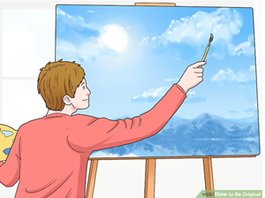

How To Be An Original

Being original, and how?
An original person is someone whose character isn’t copied from anyone else. Being original in today’s world is bit challenging as ideas are constantly being shared online. You can follow the tips shown to right to develop a good and healthy habit for originality. Note that these tips and tricks do not work like a magic trick; one must be fully committed to developing a new routing and training their mind over time.
Be Original
- Stop viewing others ideas and works. This can make bring a feeling of being overwhelmed and one might think it’s purely impossible to come up with a new idea or that there is nothing that can be added already.
- Listen to your gut feeling. Your gut feeling can be great benefit for you towards intuition and potentially something new.
- Regurgitate what you consume. After reading someone else’s works or ideas, begin to think and discuss with others what the issue is.
- Think on a larger scale. Viewing from afar can you help you generate your own ideas without being too specific on the details.
- Focus on ideas that solve real problems. Don’t wait for an idea to pop out of nowhere, begin to solve real work problems that applies your knowledge.